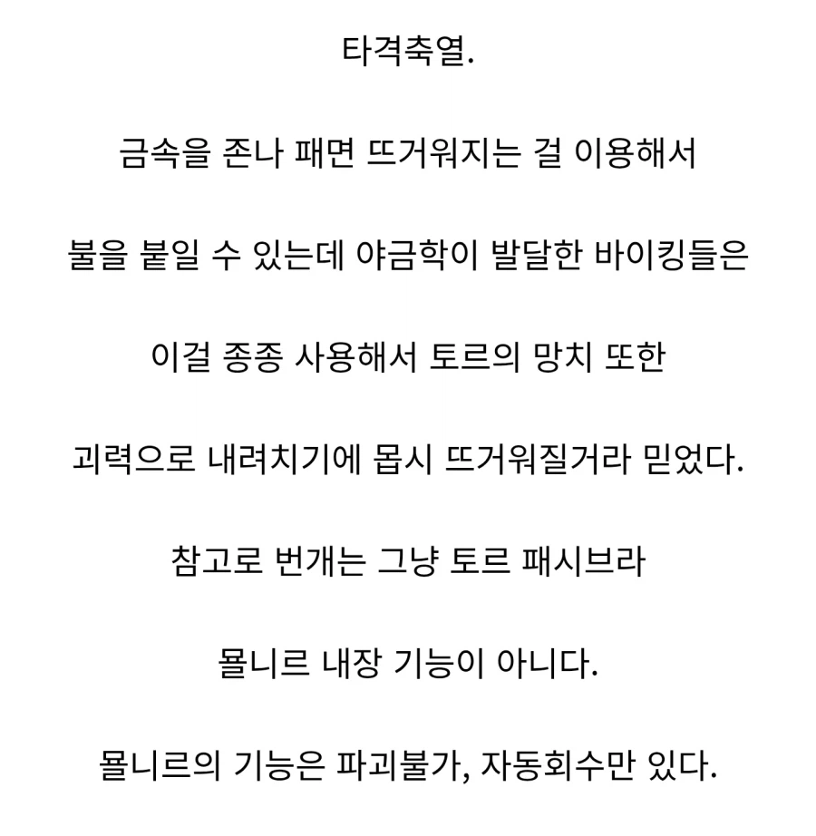

쇳조각을 망치로 한 2분 두들기면 종이에 불 붙더라 출처유튜브
대신 쇠막대와 쇠망치가 있어야됨
+모루 필수
그건 저런 강철로 된 쇠가 없으니까...
망치를 파괴하는데 실패한 잉여에너지가 열에너지로 방출되는 원리구나
사회의 구성원이 되는데 실패한 잉여 인간들을 발전소에 넣어서 열 에너지로 방출...?
모루 존나 크네
손찧을까봐 조마조마하면서봣다
스테이크도 계속 주먹으로 치면 익는다며 ㅋㅋㅋ
예전에 본거 같음
오딘 : 그래서 너는 망치의 신인거냐? 번개의 신인거냐?
어제 오랜만에 라그나로크 봤는데 이런 우연이
https://youtu.be/hvzpuPUbeYM?si=JUDvsmr_0-o2UTCW
타격축열
모루는 무슨 금속이길에 흠집하나 안나냐 신기하네
묠니르 파괴되지 않았어 토르2에서 그 언니한테?
나무 막대 존나게 비비는거보다 쉬워 보이네